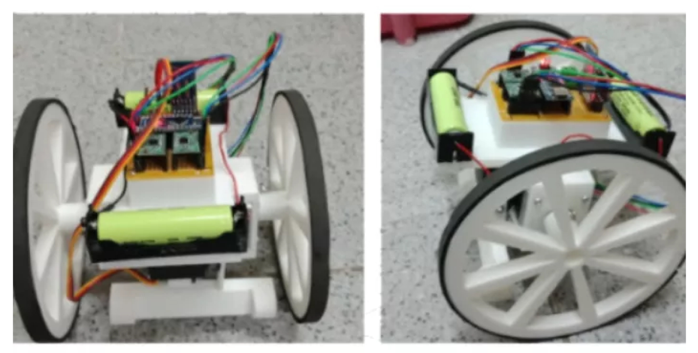

梁睿軒 (Ray Liang)
嵌入式軟韌體工程師 / Embedded Software/Firmware Engineer
ray131326@gmail.com
關於我 (About Me)
我的嵌入式之旅，始於大一的機器人實作課程。在那之後便對嵌入式系統十分著迷與投入，在學生時期有著眾多的實作經歷。並在畢業後繼續於嵌入式領域深入。在建興儲存科技(SSSTC)的兩年半中，我深入企業級SSD的核心，負責架構與優化關鍵的FTL演算法，如垃圾回收(GC)與Trim。我熱衷於解決複雜的效能瓶頸，並享受為提升系統效能與可靠性，打造簡潔高效解決方案的整個過程。
精選作品 (Featured Work)
GC Performance 調控與優化
時間：建興儲存科技任職期間
描述
因為我們的產品是microsoft用於server的儲存裝置，對於寫入速度的差距(variation)要求比一般SSD產品還高，而當時我們的device遠遠無法達標。所以我結合學生時代的所學，導入自動控制的理論，透過數學的方法改善這個問題，成功解決variation的要求，更進而優化有效資料的分布，並提升穩態的寫入速度，所謂一石三鳥的解決方案。
角色與成果
- 角色：提出解決方案、主導
- 成果：寫入速度差距(variation)控制在5%以下、提升穩態寫入速度 20%。優話 Hot/Cold Data 分佈，提升穩態寫入速度 20%。
使用工具
CUR logPythonShell ScriptTrim 功能全新架構設計
時間：建興儲存科技任職期間
描述
我在職期間經歷兩代產品，因為前一代產品的Trim功能不完善，有諸多限制。那時若要改善這個狀況必須架構大改，將會大大增加開發週期與難度。因此我當時提出一個基於原本架構的解決方案，透過改變定義以及結合journal的做法，成功解決這個複雜難題，並於新的產品實現該設計。
角色與成果
- 角色：提出解決方案、主導
- 成果：解決NUSE算不準的難題、結合DMAC硬體加速使效率提升50倍。確保非預期斷電 (SPOR) 的保護。有效降低因 Trim 引起的寫入放大。
使用工具
CUR logPythonShell ScriptQCW雷射用於晶圓隱形切割之研究
時間：研究所
描述
這項研究為敝人的碩士論文，因為其隱形的特性，難以觀察其實驗過程，其實驗的成敗只有破片時才知道，是敝人做過最難的題目。需要先透過C++模擬晶片內部的熱傳導情況，找出適合的光路NA值，並透過Zemax光學模擬軟體進行光路設計，最後透過實作驗證此一想法。
角色與成果
- 角色：計畫撰寫與規劃、程式模擬、實驗驗證
- 獎項：2022上銀機械碩士論文獎第一名、2021台灣精密工程學會精密工程論文獎第二名。
使用工具
C++ (熱傳導模擬)光路設計 (Zemax)無塵室雷射切割機兩輪自動平衡踢足球機器人
時間：研究所
描述
這是課程的期末專題，先透過Matlab做控制系統模擬，並透過開發板與電路實作來實現對硬體的控制。其中透過特別設計的自己爬起來功能，獲得了競賽的好成績。
角色與成果
- 角色：組長、電路、韌體
- 成果：本機器人在班際足球競賽獲得第一名。
使用工具
MatlabC電路設計藍芽馬達驅動3D列印光碟機之重生－SLA光學3D列印機
時間：大學
描述
此一研究是透過光學讀寫頭之微米級光斑實現高精度光固化3D列印，計劃期間需要機構設計與實現，以及電路模擬與實作，並透過開發版之GPIO腳位控制馬達以及驅動雷射點亮電路。
角色與成果
- 角色：組長、機構、電路、韌體
- 獎項：2017旭泰科技論文獎第三名、2017全國大專院校產學創新實作競賽最佳創新獎。
使用工具
C電路設計雷射切割馬達驅動攜帶式可調攀岩指力板
時間：離職後

描述
在上一份工作結束後有試著做了一小段的木工微創業，其中設計的這個指力板獲得不錯的評價，並陸續有收到訂單。本來有計畫結合嵌入式的專業，提高它的附加價值。但因為職涯考量，這個專案暫時暫停了。
角色與成果
- 角色：設計者
- 成果：解決南部岩友指力訓練的問題，並陸續收到訂單。